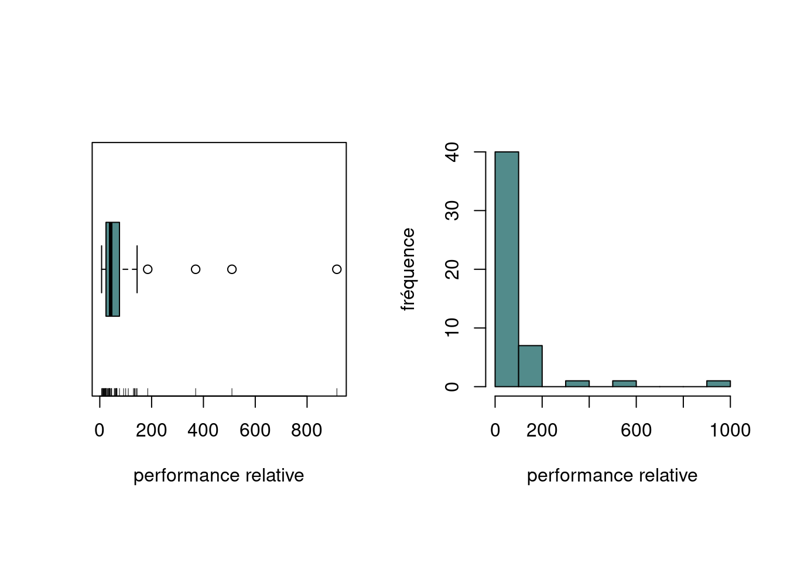
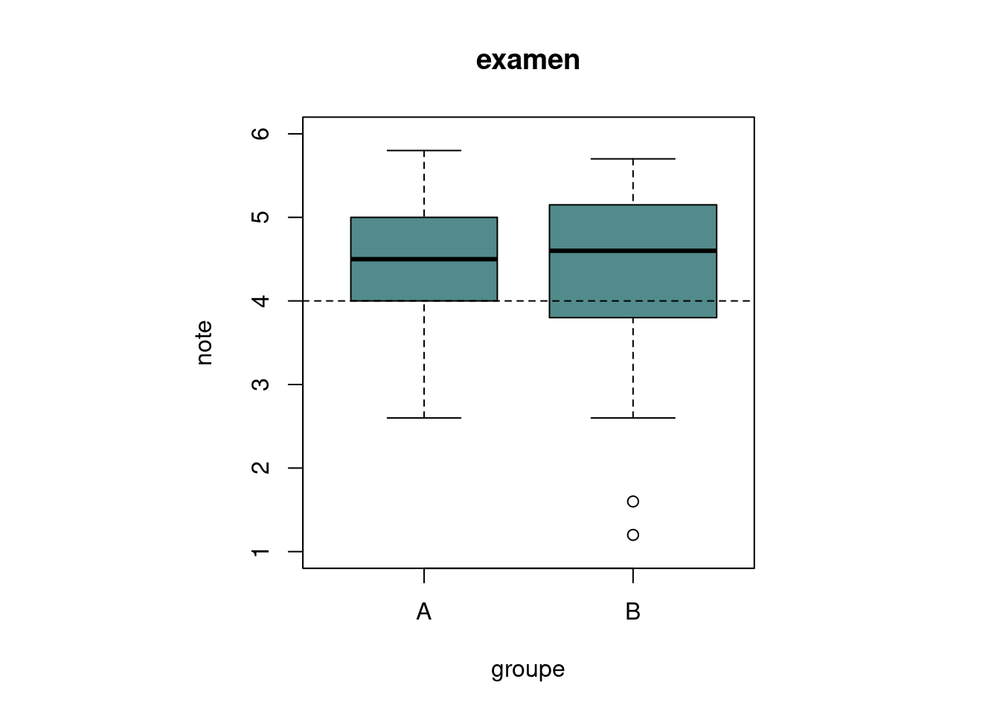

getwd()[1] "/home/maxx/Documents/HEIG/24-25/PST/R-Project"Le but de cet exercice est de prendre en main les fonctionnalités de R permetant de récupérer des jeux de données, de toutes tailles, très facilement.
Nous utiliserons pour commencer deux fonctions/instructions permettant d’extraire des données d’un fichier texte:
- scan()
- read.table()
scan() permet de récupérer les valeurs d’un fichier lorsqu’elles sont présentées sous forme de liste de valeurs, simplement séparées par un espace. La méthode renvoie alors un objet de type vecteur.
read.table() est utilisé lorsque les données se présentent sous forme de table (une ligne par observation, une colonne par variable).
Enoncé:
Télécharger et copier les données depuis la page Cyberlearn.
Pour cela, il suffit de télécharger les données et de les ajouter dans le dossier Répertoire dans lequel le fichier .R est ouvert. Ici nous ajoutons donc deux nouveaux fichiers à notre répertoire:
- cpus.txt
- examen.txt
Pour connaître le répertoire dans lequel on travaille, on peut utiliser la commande
getwd()[1] "/home/maxx/Documents/HEIG/24-25/PST/R-Project"Pour changer de répertoire, il faut utiliser la commande
# setwd("MON_NOUVEAU_CHEMIN")MON_NOUVEAU_CHEMIN est le chemin vers le répertoire auquel on souhaite accéder.
La méthode est ici commentée car MON_NOUVEAU_CHEMIN n’est pas un chemin existant les ordinateurs.
Enoncé:
Charger les données dans R en utilisant les fonctions scan et read.table().
Les utilisateurs se chargeront d’adapter les chemins à leur répertoire de travail et à leur système d’exploitation. Les fichiers cpus.txt et examen.txt sont ainsi accessibles dans R sous les noms cpus et examen respectivement.
En observant les fichiers textes cités ci-dessus, nous nous rendons compte que nous avons affaire à une liste de données pour le fichier cpus.txt et examen.txt est une table de données. Nous utiliserons donc la méthode scan() pour le fichier cpus.txt et read.table() pour examen.txt :
cpus <- scan("cpus.txt")examen <- read.table("examen.txt", header = TRUE)Dans le fichier examen.txt, il y a des en-têtes décrivant les données, le paramètre header vaut alors vrai (TRUE).
Enoncé:
Pour voir le contenu de l’objet cpus, taper l’instruction :
cpus [1] 62 130 11 12 144 16 133 26 32 7 24 19 24 66 915 92 10 45 12
[20] 58 33 38 38 25 110 40 370 185 22 18 136 44 36 76 66 56 141 64
[39] 36 510 30 100 14 60 46 65 36 21 66 24Idem pour examen:
examen groupe formation mode_de_formation somme note
1 A EE PT 24.5 3.5
2 A EE PT 43.5 5.4
3 A EE PT 39.5 5.0
4 A EE PT 21.5 3.2
5 A EE PT 26.5 3.7
6 A EE PT 15.5 2.6
7 A EE PT 36.0 4.6
8 A EE PT 32.0 4.2
9 A EE PT 39.0 4.9
10 A EE PT 41.5 5.2
11 A EE PT 32.0 4.2
12 A EE PT 29.5 4.0
13 A EE PT 45.0 5.5
14 A EE PT 47.5 5.8
15 A EE PT 42.5 5.3
16 A EE PT 42.0 5.2
17 A EE PT 33.0 4.3
18 A EE PT 34.0 4.4
19 A EE PT 41.0 5.1
20 A EE PT 35.0 4.5
21 A EE PT 39.5 5.0
22 A EE PT 30.0 4.0
23 A EE PT 27.5 3.8
24 A EE PT 38.5 4.9
25 A EE PT 36.0 4.6
26 A EE PT 30.0 4.0
27 A EE PT 35.5 4.6
28 A EE PT 19.5 3.0
29 A EE PT 35.0 4.5
30 A EE PT 40.0 5.0
31 A EE PT 31.5 4.2
32 A EE PT 30.0 4.0
33 A EE PT 26.5 3.7
34 B EE PT 42.5 5.3
35 B EE EE 23.0 3.3
36 B EE PT NA NA
37 B EE PT 29.5 4.0
38 B EE PT 39.0 4.9
39 B EE PT 39.0 4.9
40 B EE PT 26.5 3.7
41 B EE PT 39.0 4.9
42 B EE PT 43.5 5.4
43 B EE PT 40.5 5.1
44 B EE PT 2.0 1.2
45 B EE PT 6.0 1.6
46 B EE PT 41.0 5.1
47 B EE PT 38.0 4.8
48 B EE PT 45.0 5.5
49 B EE PT 25.5 3.6
50 B EE PT 31.0 4.1
51 B EE PT 46.0 5.6
52 B EE PT 42.5 5.3
53 B EE PT 22.0 3.2
54 B EE PT 42.5 5.3
55 B EE PT 37.5 4.8
56 B EE PT 23.5 3.4
57 B EE PT 47.0 5.7
58 B EE PT 45.5 5.6
59 B EE PT 32.5 4.3
60 B EE PT 39.0 4.9
61 B EE PT 34.5 4.5
62 B EE PT 22.5 3.3
63 B EE EE 30.0 4.0
64 B EE PT 30.0 4.0
65 B EE PT 46.0 5.6
66 B EE PT 26.0 3.6
67 B EE PT 42.0 5.2
68 B EE PT 35.5 4.6
69 B EE PT 35.5 4.6
70 B EE PT 16.0 2.6
71 B EE PT 28.5 3.9
72 B EE PT 30.5 4.1
73 B EE PT 29.5 4.0
74 B EE PT 41.5 5.2
75 B EE PT 40.0 5.0
76 B EE PT 36.5 4.7
77 B EE PT 27.0 3.7Enoncé:
Pour accéder à la 19ème composante du vecteur cpus, utiliser la commande :
cpus[19][1] 12Nous obtenons alors la valeur à l’index 19 (la première valeur du vecteur est d’index 1)
Enoncé:
Pour obtenir une partie du vecteur cpus comme par exemple les éléments du vecteur compris entre la 5ème et la 21ème composante, taper l’instruction :
cpus[5:21] [1] 144 16 133 26 32 7 24 19 24 66 915 92 10 45 12 58 33Enoncé:
Pour extraire du vecteur cpus ses éléments supérieurs à 200, utiliser la commande :
cpus[cpus>200][1] 915 370 510Enoncé:
Il est possible d’accéder directement aux composantes d’une table par le nom. Par exemple, si on veut afficher la composante note de l’objet examen, on peut utiliser la commande :
examen$note [1] 3.5 5.4 5.0 3.2 3.7 2.6 4.6 4.2 4.9 5.2 4.2 4.0 5.5 5.8 5.3 5.2 4.3 4.4 5.1
[20] 4.5 5.0 4.0 3.8 4.9 4.6 4.0 4.6 3.0 4.5 5.0 4.2 4.0 3.7 5.3 3.3 NA 4.0 4.9
[39] 4.9 3.7 4.9 5.4 5.1 1.2 1.6 5.1 4.8 5.5 3.6 4.1 5.6 5.3 3.2 5.3 4.8 3.4 5.7
[58] 5.6 4.3 4.9 4.5 3.3 4.0 4.0 5.6 3.6 5.2 4.6 4.6 2.6 3.9 4.1 4.0 5.2 5.0 4.7
[77] 3.7Enoncé:
On peut aussi accéder en profondeur aux composantes comme par exemple par la commande :
examen$note[9][1] 4.9Enoncé:
La méthode la plus simple pour créer un vecteur consiste à énumérer ses éléments à l’aide de la fonction c() :
mesdonnees<-c(2.9, 3.4, 3.4, 3.7, 3.7, 2.8, 2.1, 2.5, 2.6, 1.5)
mesdonnees [1] 2.9 3.4 3.4 3.7 3.7 2.8 2.1 2.5 2.6 1.5couleurs<-c("bleu", "vert", "blanc", "noir", "jaune")
couleurs[1] "bleu" "vert" "blanc" "noir" "jaune"Enoncé:
On peut ôter des composantes d’un vecteur en indiquant entre crochets les indices précédés du signe négatif comme par exemple :
mesdonnees[-c(5:9)][1] 2.9 3.4 3.4 3.7 1.5Enoncé:
Finalement, le contenu de votre environnement de travail est affiché à l’aide de la fonction ls() :
ls()[1] "couleurs" "cpus" "examen" "mesdonnees"Dans cet exercice, nous avons appris à :
- changer de répertoire de travail
- extraire des jeux de données de fichiers textes
- afficher les dits-jeuc de données
- accèder à certaines parties uniquement de vecteurs ou tables de données
- créer des vecteurs de données
- modifier des données présentes dans les vecteurs
- afficher le contenu de notre environnement de travail
La performance relative au processeur IBM 370/158-3 de 50 processeurs d’ordinateurs a été relevée.
L’objet cpus contient les valeurs observées:
cpus [1] 62 130 11 12 144 16 133 26 32 7 24 19 24 66 915 92 10 45 12
[20] 58 33 38 38 25 110 40 370 185 22 18 136 44 36 76 66 56 141 64
[39] 36 510 30 100 14 60 46 65 36 21 66 24Enoncé:
Construire un diagramme branche-et-feuilles, une boîte à moustaches et un histogramme des données observées à l’aide des commandes ci-dessous.
stem(cpus)
The decimal point is 2 digit(s) to the right of the |
0 | 111111222222223333344444445566666777789
1 | 01334449
2 |
3 | 7
4 |
5 | 1
6 |
7 |
8 |
9 | 2par(mfrow=c(1,2), pty="s")
boxplot(cpus, xlab="performance relative", col="darkslategray4", horizontal=T)
rug(cpus)
hist(cpus, xlab="performance relative", ylab="fréquence", main="",
col="darkslategray4") 
par(mfrow=c(1,1))Laquelle?
rug()?La fonction rug() en R ajoute de “petites barres verticales” (ou des “traits”) le long de l’axe des x (ou y) pour représenter individuellement chaque observation des données. L’effet principal de cette fonction est de permettre la visualisation de la densité des données de manière précise directement sur un graphique en montrant exactement où se trouvent la valeurs observées.
La fonction rug()a comme avantages de fournir une information granulaire qui complète les graphiques résumés, de montrer si certaines données sont concentrées ou dispersées et enfin aide grandement à repérer les valeurs isolées ou des regroupements locaux.
stem(cpus)
Cette commande génère un diagramme branche-et-feuilles pour les données de cpus. Elle divise les données en une partie “tige” (les chiffres significatifs, comme les dizaines) et une partie “feuille” (les unités). Cela fournit une visualisation textuelle rapide pour comprendre la répartition et les valeurs individuelles des données.
par(mfrow=c(1,2), pty=“s”)
par(mfrow=c(1,2)) divise la fenêtre graphique en une rangée de deux colonnes (1 ligne, 2 colonnes), permettant d’afficher deux graphiques côte à côte.pty="s" ajuste les graphiques pour qu’ils aient un rapport d’aspect carré.
boxplot(cpus, xlab=“performance relative”, col=“darkslategray4”, horizontal=T)
Trace une boîte à moustaches (boxplot) des données. Elle permet une visualisation de la médiane, des quartiles (Q1 et Q3), des valeurs extrêmes (whiskers), et éventuellement des points aberrants.
Le paramètre horizontal=T rend le boxplot horizontal, le paramètre col="darkslategray4" modifie la couleur de la boîte. Enfin, le paramètre xlab="performance relative" ajoute une étiquette descriptive à l’axe x.
rug(cpus)
La fonction rug() ajoute de petites barres verticales le long de l’axe horizontal dans le boxplot, représentant chaque observation dans les données. Cela permet de visualiser individuellement les valeurs des données, en plus des statistiques résumées fournies par le boxplot.
hist(cpus, xlab=“performance relative”, ylab=“fréquence”, main=““, col=”darkslategray4”)
Cette commande trace un histogramme des données de l’objet cpus. Les valeurs de cpus sont alors regroupées en classe. La hauteur de chaque barre représente la fréquence des observation dans chaque classe.
Les étiquette d’axes (xlab et ylab) et la couleur des barres (col="darkslategray4) sont personnalisées.
main="" laisse le titre vide
par(mfrow=c(1,1)) Cette commande réinitialise la dispositon graphique pour revenir à un seul graphique par fenêtre.
Résumé des commandes combinées
Cette suite de commandes crée une visualisation complète des données :
1) Diagramme branche-et-feuilles pour une vue textuelle. 2) Boîte à moustaches pour un résumé des statistiques et des valeurs aberrantes.
3) Histogramme pour une vue des fréquences des données.
4) rug() dans le boxplot pour montrer individuellement chaque donnée.
Ces visualisations offrent à la fois un aperçu statistique (boîte à moustaches) et une distribution (histogramme et diagramme branche-et-feuilles) des données cpus.
Enoncé:
Commenter la distribution des valeurs observées en se basant sur les graphiques de la Figure 1 : valeur(s) atypique(s), asymétrie.
Valeurs atypiques:
Dans la boîte à moustaches, les valeurs atypiques sont identifiées comme des points en dehors des “moustaches”.
Nous remarquons ici que les données 915 et 510 sont très éloignées du reste de la distribution et donc se démarquent fortement.
Asymétrie:
Principalement visible dans l’histogramme, on remarque une asymétrie forte vers la gauche. La majorité des valeurs sont inférieures à 100 et restent donc groupées dans une même barre. Seules quelques valeurs sont dispersées dans les autres barres de l’histogramme.
La boîte à moustache confirme cette asymétrie : la médiane est décalée vers la gauche, et la moustache supérieure est beaucoup plus longue que l’inférieure.
Répartition des données:
Les données sont majoritairement concentrées dans une plage étroite (entre 10 et 100, comme le montre le boxplot et l’histogramme). Cela suggère une densité élevée dans cette région.
Quelques observations exceptionnelles (915, 510, etc.) sont situées bien au-delà du reste des données, créant une queue longue dans la distribution.
Enoncé:
Calculer la performance relative médiane et la performance relative moyenne des valeurs observées en utilisant les fonctions de R adéquates.
Pour calculer la performance relative médiane, nous utilisons la fonction median():
median(cpus)[1] 42Pour calculer la performance moyenne, nous utilison la fonction mean():
mean(cpus)[1] 86.88Question:
Est-il plus approprié d’utiliser la médiane ou la moyenne ?
Nous remarquons que la médiane des données est moins sensible aux valeurs atypiques et représente la valeur centrale des performances relatives.
La moyenne des données est influencée par les valeurs extrêmes (atypiques), ce qui pourrait la tirer vers des valeurs plus élevées que la médiane.
Ici, nous pouvons donc indiquer que la médiane est un indicateur plus approprié que la moyenne car elle offre une mesure plus robuste et réaliste. La moyenne peut cependant être utile pour compléter l’analyse, indiquant notamment l’impact des valeurs atypiques.
Enoncé:
Déterminer le(s) mode(s) des valeurs observées à l’aide des commandes suivantes :
n.cpus<-table(cpus)
as.numeric(names(n.cpus)[n.cpus==max(n.cpus)])[1] 24 36 66On observe donc plusieurs modes, les données sont donc multimodales.
Enoncé:
Que fait la commande suivante ?
summary(cpus) Min. 1st Qu. Median Mean 3rd Qu. Max.
7.00 24.00 42.00 86.88 73.50 915.00 Cette commande rend un “tableau” avec les valeurs suivantes:
Min : représente la plus petite valeur contenue dans l’objet cpus
1st Qu. : soit le premier quartile. C’est la limite inférieure sur un graphique de type boîte à moustache.
Median : représente la médiane, soit la valeur centrale de la distribution
Mean : représente la moyenne arithmétique des données
3rd Qu. : soit le troisème quartile. C’est la limite supérieure sur un graphique de type boîte à moustache.
Max : représente la plus grande valeur contenue dans l’objet cpus
Enoncé: Décrire l’effet sur la moyenne et sur la médiane des trois interventions suivantes :
1. ajouter un processeur de performance relative 43
2. soustraire 9 à chaque valeur observée
3. diviser chaque observation par 3
1)
La moyenne est directement affectée par l’ajout de nouvelles valeurs.
Cela augmente la somme totale des observations (de 43 ici) et augmente le nombre total d’observation (de 1 ici).
Pour calculer la nouvelle moyenne, on peut utiliser la formule suivante:
\[Nouvelle Moyenne = (Ancienne Somme Totale + 43) / (Ancien Nombre Observations + 1) \] Si la valeur ajoutée est proche de l’ancienne moyenne, l’effet sera minime.
La médiane est moins sensible que la moyenne. Elle ne sera modifiée que si la nouvelle valeur affecte la position de la valeur centrale.
2)
La moyenne et la médiane sont affectées de manière linéaire si on soustrait un coefficient équivalent à chacune des observations du jeu de données. On peut utiliser les formules suivantes pour trouver les nouvelles moyenne et médiane respectivement:
\[NouvelleMoyenne = Ancienne Moyenne - 9 \] \[Nouvelle Mediane = Ancienne Mediane - 9\]
3)
Comme pour le point 2), la médiane et la moyenne sont affectées de la même manière lorsque les observations sont divisées par 3: Elles sont également divisées par 3. On peut alors utiliser les formules suivantes: \[NouvelleMoyenne = Ancienne Moyenne / 3 \] \[Nouvelle Mediane = Ancienne Mediane / 3\]
Enoncé:
Calculer l’écart-type des performances relatives une fois avec les valeurs atypiques et une fois sans en utilisant la fonction sd(). Les valeurs atypiques peuvent être déterminées à l’aide de la fonction boxplot() avec plot=FALSE comme argument.
Calcul de l’écart-type avec les valeurs atypiques:
sd(cpus)[1] 148.4294Identification des valeurs atypiques:
box <- boxplot(cpus, plot = FALSE);
box$stats
[,1]
[1,] 7
[2,] 24
[3,] 42
[4,] 76
[5,] 144
$n
[1] 50
$conf
[,1]
[1,] 30.38082
[2,] 53.61918
$out
[1] 915 370 185 510
$group
[1] 1 1 1 1
$names
[1] "1"Les valeurs atypiques sont répertoriées sous la banière out. Nous pouvons donc les récupérer en utilisant la commande suivante:
valeursAtypiques <- box$out
valeursAtypiques[1] 915 370 185 510Nous pouvons ensuite les retirer de notre jeu de données (en faisant une copie pour ne pas corrompre notre jeu initial):
cpus_clean <- cpus[!cpus %in% valeursAtypiques]Calcul de l’écart-type sans les valeurs atypiques:
sd(cpus_clean)[1] 38.5864Question
Que constate-t-on ? L’écart-type est-il un indicateur robuste ?
L’écart-type n’est pas un indicateur robuste. Les valeurs atypiques ont une grande influence sur sa valeur. On remarque dans nos résultats une différence de 109.843, ce qui est absolument énorme.
Les étudiants suivant un cours de Probabilités et Statistique dans une école d’ingénierie ont passé l’examen de fin d’unité. Le cours était donné par le même professeur à étudiants répartis en deux groupes notés A et B. Les résultats obtenus figurent dans la table ci-dessous et sont contenus dans l’objet examen.
examen groupe formation mode_de_formation somme note
1 A EE PT 24.5 3.5
2 A EE PT 43.5 5.4
3 A EE PT 39.5 5.0
4 A EE PT 21.5 3.2
5 A EE PT 26.5 3.7
6 A EE PT 15.5 2.6
7 A EE PT 36.0 4.6
8 A EE PT 32.0 4.2
9 A EE PT 39.0 4.9
10 A EE PT 41.5 5.2
11 A EE PT 32.0 4.2
12 A EE PT 29.5 4.0
13 A EE PT 45.0 5.5
14 A EE PT 47.5 5.8
15 A EE PT 42.5 5.3
16 A EE PT 42.0 5.2
17 A EE PT 33.0 4.3
18 A EE PT 34.0 4.4
19 A EE PT 41.0 5.1
20 A EE PT 35.0 4.5
21 A EE PT 39.5 5.0
22 A EE PT 30.0 4.0
23 A EE PT 27.5 3.8
24 A EE PT 38.5 4.9
25 A EE PT 36.0 4.6
26 A EE PT 30.0 4.0
27 A EE PT 35.5 4.6
28 A EE PT 19.5 3.0
29 A EE PT 35.0 4.5
30 A EE PT 40.0 5.0
31 A EE PT 31.5 4.2
32 A EE PT 30.0 4.0
33 A EE PT 26.5 3.7
34 B EE PT 42.5 5.3
35 B EE EE 23.0 3.3
36 B EE PT NA NA
37 B EE PT 29.5 4.0
38 B EE PT 39.0 4.9
39 B EE PT 39.0 4.9
40 B EE PT 26.5 3.7
41 B EE PT 39.0 4.9
42 B EE PT 43.5 5.4
43 B EE PT 40.5 5.1
44 B EE PT 2.0 1.2
45 B EE PT 6.0 1.6
46 B EE PT 41.0 5.1
47 B EE PT 38.0 4.8
48 B EE PT 45.0 5.5
49 B EE PT 25.5 3.6
50 B EE PT 31.0 4.1
51 B EE PT 46.0 5.6
52 B EE PT 42.5 5.3
53 B EE PT 22.0 3.2
54 B EE PT 42.5 5.3
55 B EE PT 37.5 4.8
56 B EE PT 23.5 3.4
57 B EE PT 47.0 5.7
58 B EE PT 45.5 5.6
59 B EE PT 32.5 4.3
60 B EE PT 39.0 4.9
61 B EE PT 34.5 4.5
62 B EE PT 22.5 3.3
63 B EE EE 30.0 4.0
64 B EE PT 30.0 4.0
65 B EE PT 46.0 5.6
66 B EE PT 26.0 3.6
67 B EE PT 42.0 5.2
68 B EE PT 35.5 4.6
69 B EE PT 35.5 4.6
70 B EE PT 16.0 2.6
71 B EE PT 28.5 3.9
72 B EE PT 30.5 4.1
73 B EE PT 29.5 4.0
74 B EE PT 41.5 5.2
75 B EE PT 40.0 5.0
76 B EE PT 36.5 4.7
77 B EE PT 27.0 3.7On se demande si une différence significative existe entre les deux groupes à l’examen.
Enoncé:
Tracer les boîtes à moustaches en parallèle en utilisant les commandes suivantes :
lblue<-"#528B8B"
par(pty="s")
boxplot(note~groupe, data=examen, ylim=c(1,6), xlab="groupe",
varwidth=T, col=lblue, main="examen")
abline(h=4, lty=2)
Enoncé:
Rajouter les bâtonnets des notes des étudiants des deux classes, sur le côté gauche des boîtes à moustaches pour la classe (side=2 comme argument de la fonction rug()) et sur le côté droite pour la classe (side=4 comme argument de la fonction rug()).
Indication: pour séparer puis enregistrer les notes des étudiants selon les groupes, on peut utiliser les commandes:
note.A<-split(examen$note, examen$groupe)$A
note.B<-split(examen$note, examen$groupe)$BRajoutons les bâtonnets au graphique:
lblue<-"#528B8B"
par(pty="s")
boxplot(note~groupe, data=examen, ylim=c(1,6), xlab="groupe",
varwidth=T, col=lblue, main="examen")
abline(h=4, lty=2)
rug(note.A, side=2)
rug(note.B, side=4)Enoncé:
En se basant sur la Figure 2 (ci-dessus), existe-t-il une différence significative entre les deux groupes à l’examen de fin d’unité ?
On remarque que la boîte du groupe B est légérement plus étendue que celle du groupe A. On peut donc supposer que la distribution des notes a été plus éparse que pour le groupe A. On remarque ……